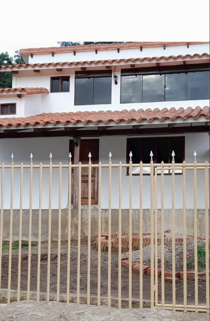
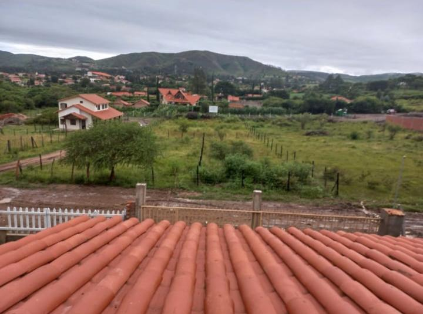
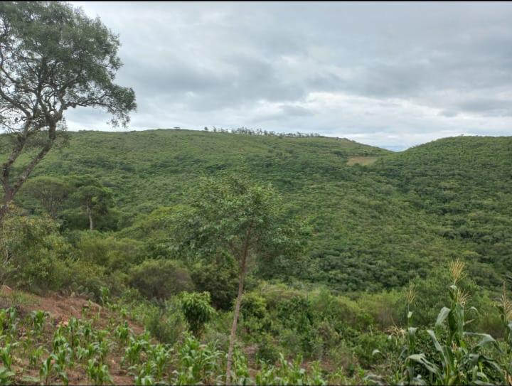
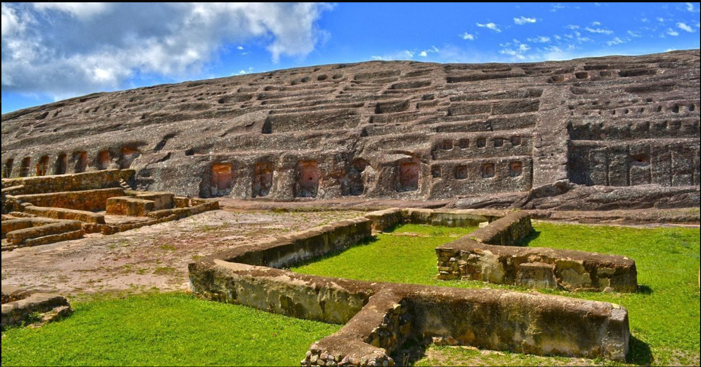

Sobre Nosotros
En Mirador del Guajojó Ecolodge ofrecemos una experiencia única. Ubicados en Samaipata, nuestras cabañas ecológicas están rodeadas de naturaleza y vistas impresionantes.
Galería




Reserva Ahora
Reserva tu estadía y disfruta de un lugar único en Samaipata.
Ubicación
Estamos ubicados en el barrio El Salitral, Samaipata, Bolivia.
Contacto
Email: andaverisbusiness@gmail.com
Teléfono: +591 678 155 48